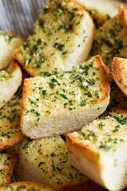

Delicious Garlic Bread Recipe!

This is my world famous recipe for cheesy and golden brown garlic bread.
Ingredients needed are as follows:
- Garlic Bread
- Parmesean Cheese
- Thyme
Directions are as follows:
- Preheat oven to 350 degrees.
- Slice garlic bread, placing on non stick tray.
- Add cheese and bake for 5-7 minutes.